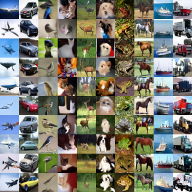
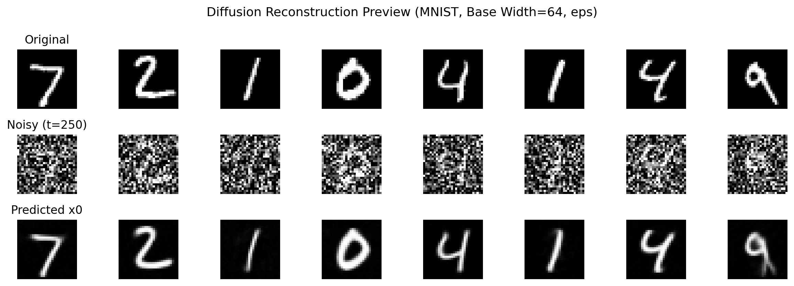
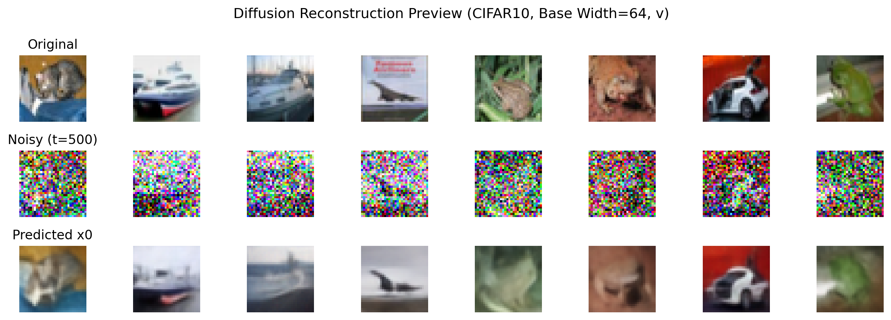

CIFAR10 generation
Native 32x32 samples are shown as a compact contact sheet to avoid artificial zoom blur.
Diffusion image reconstruction

Presentation figures
Native 32x32 samples are shown as a compact contact sheet to avoid artificial zoom blur.

Digit samples from the trained legacy grayscale diffusion model.

Clean, noisy, and reconstructed views from the denoising pipeline.

RGB reconstructions from the ADM diffusion model.
Modeling choices
Legacy grayscale diffusion at native 28x28 resolution.
Same grayscale protocol as MNIST, rerun with longer wall time to complete artifacts.
ADM RGB diffusion at native 32x32 resolution with compact sample export for presentation.
Runbook
CLEAR_INCOMPLETE=1 sbatch slurm/final_study/train_fashion_array.slurm
sbatch slurm/final_study/eval_all_array.slurm
sbatch slurm/final_study/finalize.slurmpython train.py \
--config configs/diffusion/mnist.yaml \
--epochs 100 \
--sample-count 100 \
--run-name mnist_showcase_seed001 \
--seed 1python train.py \
--config configs/diffusion/fashion.yaml \
--epochs 125 \
--sample-count 100 \
--run-name fashion_showcase_seed001 \
--seed 1python evaluate.py \
--checkpoint path/to/checkpoints/best.pt \
--mode sample \
--artifact-sample-count 100 \
--sampling-steps 100